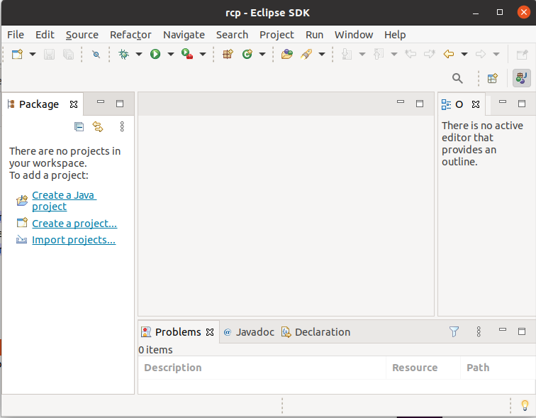

Histoire d'Eclipse
Le projet Eclipse a été initié par IBM pour remplacer, en utilisant Java,
l'IDE Visual Age, alors basé sur Smalltalk. Dès l'origine du projet,
IBM a voulu offrir une solution multiplate-forme, pouvant être exécutée sur
les différents systèmes d'exploitation de ses clients. De même le projet s'est
voulu extensible par le biais de plugins.
En novembre 2001 est initiée la Fondation Eclipse, à l'instigation de poids
lourds de l'informatique comme Borland, IBM ou Red Hat. IBM place
alors sa plateforme Eclipse en open source, et fin 2003, le consortium est
passé à plus de 80 membres. Eclipse est ainsi un environnement de
développement libre.
